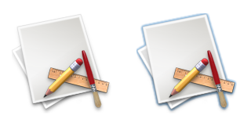
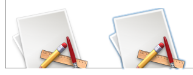
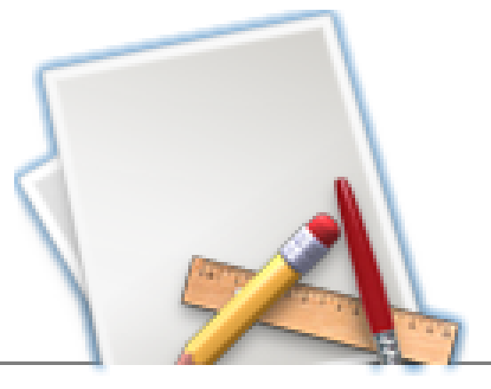

Q: How can I draw a selected icon with a focus ring like the HIToolbox does in a HIToolbar?A: There is a special IconTransformType value which can be used with PlotIconRefInContext, and only PlotIconRefInContext, in order to get the desired result. This IconTransformType is available in Mac OS X since version 10.3 but is not exported in the headers. It will be documented in Icons.h in a later release of the Development Tools but you can start using it right now by defining it yourself: Listing 1: Defining the kTransformFocused IconTransformType.
enum
{
kTransformFocused = 0x8000
};
Then you just use this IconTransformType like any other as in the sample code extract below: Listing 2: Using the kTransformFocused IconTransformType.
IconRef iconRef;
status = GetIconRef(kOnSystemDisk, kSystemIconsCreator, kGenericApplicationIcon, &iconRef);
require_noerr(status, bail);
status = PlotIconRefInContext(
context, &iconRect, kAlignNone, kTransformNone,
&color, kPlotIconRefNormalFlags, iconRef);
require_noerr(status, bail);
iconRect = CGRectOffset(iconRect, 160, 0);
status = PlotIconRefInContext(
context, &iconRect, kAlignNone, kTransformFocused,
&color, kPlotIconRefNormalFlags, iconRef);
require_noerr(status, bail);
And this code should draw the following icons: Figure 1: Generic Application Icon Non-Selected and Selected.  However, if the icon is clipped, for example by its parent view (see Figure 2 and Figure 3), then the focus ring will be partly drawn outside the clip area, leaving an undesired graphic artifact (in this example, at the bottom of the icon). This is a purely cosmetic bug and is a known problem. Figure 2: Icons clipped by the parent view.  Figure 3: Magnified icon with its artifacts.  Document Revision History| Date | Notes |
|---|
| 2005-03-29 | Documents a new IconTransformType, available in Panther and later, which draws a focus ring around an icon. |
Posted: 2005-03-29
|